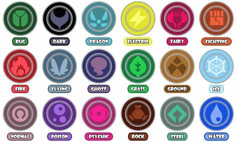
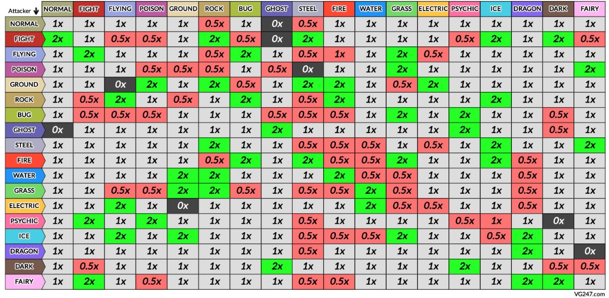

Al adentrase a pokemon, unas de las principales caracteristicas de este famoso juego de Nintendo Company, Ltd.
Son los elementos de los pokemon o "Tipos" como son mayor mente conocidos, si bien muchos de estos siguen
cierta "logica" a lo largo de el videojuego se encuentran algunas interacciones irreales como el tipo "dragon" o el tipo "bicho" que si bien se pueden interpretar de alguna forma, podemos entender que por todo lo que esto implica y al existir 18 Tipos la labor se complica.
Para adentrase en el tema primero tendremos que ver cuales son los 18 tipos

Apoyandonos en la imagen anterior nos podemos clasificar a los pokemons
empezando por algo simple podriamos entender que esta clasificacion nos permite decir "este pokemon es bueno contra", o "este pokemon es malo contra"
por ejemplo por logica entenderiamos que un pokemon de agua tendria ventaja contra un pokemon de fuego y a su vez podriamos pensar que un pokemon de planta es resistente al agua.
Dentro del juego estas interacciones se clasifican de esta manera:
- Eficaz contra: todo el daño que hagan tus ataques superefectivos se multiplica por dos.
- Muy débil a: el daño entrante o recibido de ataques superefectivos se multiplica por dos.
- Estándar contra: el daño que provocas es normal (como si se multiplicase por uno).
- Vulnerable a: el daño que te provocan es normal (como si se multiplicase por uno).
- Inmune a: algunos Pokémon no reciben ningún tipo de daño entre tipos, como por ejemplo los ataques Normales que no afectan a los Fantasma.
Aqui tenemos como ejemplo la efectividad entre los primeros 18 tipos, aunque estos pueden ser combinados ya que algunos pokemon posen mas de 1 tipo.

Para el caso en particular en el que un pokemon tengas 2 tipos estas eficienciase se multiplican
para esto hay que entender que los ataques solo pueden tener un tipo, si se hacer un aatque de lucha a un pokemon que tiene como tipos roca y acero, sabemos que lucha hace x2 a estos 2 entonces nuestro resultante seria 2x2 por lo que realizariamos un x4 de daño.